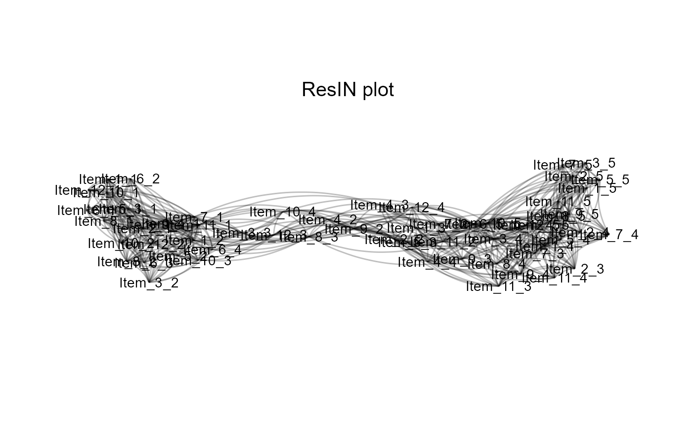

Performs Response Item-Network (ResIN) analysis
Usage
ResIN(
df,
node_vars = NULL,
left_anchor = NULL,
cor_method = "auto",
weights = NULL,
method_wCorr = "Polychoric",
poly_ncor = 2,
neg_offset = 0,
ResIN_scores = TRUE,
remove_negative = TRUE,
EBICglasso = FALSE,
EBICglasso_arglist = NULL,
remove_nonsignificant = FALSE,
sign_threshold = 0.05,
node_covars = NULL,
node_costats = NULL,
network_stats = TRUE,
detect_clusters = FALSE,
cluster_method = NULL,
cluster_arglist = NULL,
cluster_assignment = TRUE,
seed = NULL,
generate_ggplot = TRUE,
plot_ggplot = TRUE,
plot_whichstat = NULL,
plot_edgestat = NULL,
color_palette = "RdBu",
plot_responselabels = TRUE,
response_levels = NULL,
plot_title = NULL,
save_input = TRUE
)Arguments
- df
A data-frame object containing the raw data.
- node_vars
An optional character vector detailing the attitude item columns to be selected for ResIN analysis (i.e. the subset of attitude variables in df).
- left_anchor
An optional character scalar indicating a particular response node which determines the spatial orientation of the ResIN latent space. If this response node does not appear on the left-hand side, the x-plane will be inverted. This ensures consistent interpretation of the latent space across multiple iterations (e.g. in bootstrapping analysis). Defaults to NULL (no adjustment to orientation is taken.)
- cor_method
Which correlation method should be used? Defaults to "auto" which applies the
cor_autofunction from theqgraphpackage. Possible arguments are"auto","pearson","kendall", and"spearman".- weights
An optional continuous vector of survey weights. Should have the same length as number of observations in df. If weights are provided, weighted correlation matrix will be estimated with the
weightedCorrfunction from thewCorrpackage.- method_wCorr
If weights are supplied, which method for weighted correlations should be used? Defaults to
"Polychoric". SeewCorr::weightedCorrfor all correlation options.- poly_ncor
How many CPU cores should be used to estimate polychoric correlation matrix? Only used if
cor_method = "polychoric".- neg_offset
Should negative correlations be offset to avoid small correlation pairs disappearing? Defaults to
0. Any positive number between 0 and 1 may be supplied instead.- ResIN_scores
Should spatial scores be calculated for every individual. Defaults to TRUE. Function obtains the mean positional score on the major (x-axis) and minor (y-axis). Further versions of this package will include more sophisticated scoring techniques.
- remove_negative
Should all negative correlations be removed? Defaults to TRUE (highly recommended). Setting to FALSE makes it impossible to estimate a force-directed network layout. Function will use igraph::layout_nicely instead.
- EBICglasso
Should a sparse, Gaussian-LASSO ResIN network be estimated? Defaults to FALSE. If set to TRUE,
EBICglassofunction from theqgraphpackages performs regularization on (nearest positive-semi-definite) ResIN correlation matrix.- EBICglasso_arglist
An argument list feeding additional instructions to the
EBICglassofunction ifEBICglassois set to TRUE.- remove_nonsignificant
Optionally, should non-significant edges be removed from the ResIN network? Defaults to FALSE. Note that this option is incompatible with EBICglasso and weighted correlations.
- sign_threshold
At what p-value threshold should non-significant edges be removed? Defaults to 0.05.
- node_covars
An optional character string selecting quantitative covariates that can be used to enhance ResIN analysis. Typically, these covariates provide grouped summary statistics for item response nodes. (E.g.: What is the average age or income level of respondents who selected a particular item response?) Variable names specified here should match existing columns in
df.- node_costats
If any
node_covarsare selected, what summary statistics should be estimated from them? Argument should be a character vector and call a base-R function. (E.g."mean","median","sd"). Each element specified innode_costatsis applied to each element innode_covarsand the out-put is stored as a node-level summary statistic in theResIN_nodeframe. The extra columns inResIN_nodeframeare labeled according to the following template: "covariate name"_"statistic". So for the respondents mean age, the corresponding column inResIN_nodeframewould be labeled as "age_mean".- network_stats
Should common node- and graph level network statistics be extracted? Calls
qgraph::centrality_autoandDirectedClustering::ClustFto the ResIN graph object to extract node-level betweenness, closeness, strength centrality, as well as the mean and standard deviation of these scores at the network level. Also estimates network expected influence, average path length, and global clustering coefficients. Defaults to TRUE. Set to FALSE if estimation takes a long time.- detect_clusters
Optional, should community detection be performed on item response network? Defaults to FALSE. If set to TRUE, performs a clustering method from the [igraph](https://igraph.org/r/doc/cluster_leading_eigen.html) library and stores the results in the
ResIN_nodeframeoutput.- cluster_method
A character scalar specifying the [igraph-based](https://igraph.org/r/doc/communities.html) community detection function.
- cluster_arglist
An optional list specifying additional arguments to the selected [igraph](https://igraph.org/r/doc/communities.html) clustering method.
- cluster_assignment
Should individual (survey) respondents be assigned to different clusters? If set to TRUE, function will generate an n*c matrix of probabilities for each respondent to be assigned to one of c clusters. Furthermore, a vector of length n is generated displaying the most likely cluster respondents belong to. In case of a tie between one or more clusters, a very small amount of random noise determines assignment. Both matrix and vectors are added to the
aux_objectslist. Defaults to FALSE and will be ignored ifdetect_clustersis set to FALSE.- seed
Random seed for force-directed algorithm. Defaults to NULL (no seed is set.) If scalar integer is supplied, that seed will be set prior to analysis.
- generate_ggplot
Should a ggplot-based visualization of the ResIN network be generated? Defaults to TRUE.
- plot_ggplot
Should a basic ggplot of the ResIN network be plotted? Defaults to TRUE. If set to FALSE, the ggplot object will not be directly returned to the console. (However, if generate_ggplot=TRUE, the plot will still be generated and stored alongside the other output objects.)
- plot_whichstat
Should a particular node-level metric be color-visualized in the ggplot output? For node cluster, specify "cluster". For the same Likert response choices or options, specify "choices". For a particular node-level co-variate please specify the name of the particular element in
node_covarsfollowed by a "_" and the specificnode_costatsyou would like to visualize. For instance if you want the visualize average age at the node-level, you should specify "age_mean". To colorize by node centrality statistics, possible choices are "Strength", "Betweenness", "Closeness", and "ExpectedInfluence". Defaults to NULL. Make sure to supply appropriate choices tonode_covars,node_costats,detect_clusters, and/ornetwork_statsprior to setting this argument.- plot_edgestat
Should the thickness of the edges be adjusted according to a particular co-statistic? Defaults to NULL. Possible choices are "weight" for the bi-variate correlation strength, and "edgebetweenness"
- color_palette
Optionally, you may specify the ggplot2 color palette to be applied to the plot. All options contained in [
RColorBrewer](https://cran.r-project.org/web/packages/RColorBrewer/RColorBrewer.pdf) (for discrete colors such as cluster assignments) and [ggplot2::scale_colour_distiller](https://ggplot2.tidyverse.org/reference/scale_brewer.html) are supported. Defaults to "RdBu".- plot_responselabels
Should response labels be plotted via
geom_text? Defaults to TRUE. It is recommended to set to FALSE if the network possesses a lot of nodes and/or long response choice names.- response_levels
An optional character vector specifying the correct order of global response levels. Only useful if all node-items follow the same convention (e.g. ranging from "strong disagreement" to "strong agreement"). The supplied vector should have the same length as the total number of response options and supply these (matching exactly) in the correct order. E.g. c("Strongly Agree", "Somewhat Agree", "Neutral", "Somewhat Disagree", "Strongly Disagree"). Defaults to NULL.
- plot_title
Optionally, a character scalar specifying the title of the ggplot output. Defaults to "ResIN plot".
- save_input
Optionally, should input data and function arguments be saved (this is necessary for running ResIN_boots_prepare function). Defaults to TRUE.
Value
An edge-list type data-frame, ResIN_edgelist, a node-level data-frame, ResIN_nodeframe, an n*2 data-frame of individual-level spatial scores along the major (x) and minor(y) axis, ResIN_scores a list of graph-level statistics graph_stats including (graph_structuration) and centralization (graph_centralization), as well as a list of auxiliary objects, aux_objects, including the ResIN adjacency matrix (adj_matrix), a numeric vector detailing which item responses belong to which item (same_items), and the dummy-coded item-response data-frame (df_dummies).
Examples
## Load the 12-item simulated Likert-type toy dataset
data(lik_data)
# Apply the ResIN function to toy Likert data:
ResIN_obj <- ResIN(lik_data, cor_method = "spearman", network_stats = TRUE, detect_clusters = TRUE)
